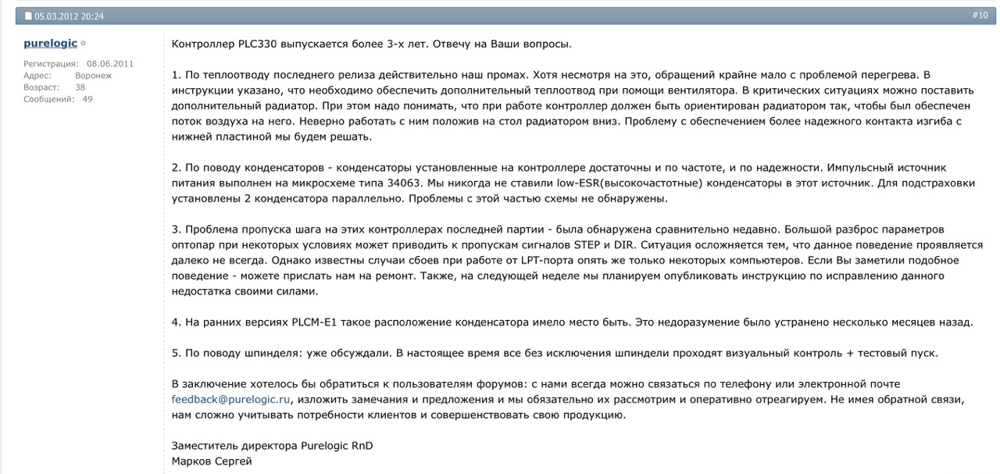

Programming, electronics, lifestyle
Покупка и разбор фрезерного станка Cutmaster CM-1500
Навигация по проекту:
- Покупка и разбор фрезерного станка Cutmaster CM-1500
- Модернизация Cutmaster CM-1500
- Установка и настройка Grbl
- CNCjs + ESP-Link
- Grbl + ESC & Brushless motor
Осмотр станка
14 августа 2020 года я купил свой первый станок. До этого его использовал мой знакомый для раскроя листовых материалов в хоббийных целях. Станок + доставка + самодельный шпиндель мне обошлись в 27 тысяч рублей – что считаю очень выгодной покупкой для станка с такими характеристиками.

Это старая версия CM-1500 от российской компании Cutmaster.
Станок имеет рабочую зону 1000x500x75, что удовлетворят моим потребностям. Перемещение по осям XY выполнены на зубчатой передаче, а перемещения по оси Z – на трапеции (НЕ на ШВП).
Обзор обновленной версии станка Cutmaster CM1500S:
Станок оснащен комбинированным драйвером двигетелей с LPT портом и предназначен для уплавления с помощью Mach3 или LinuxCNC.

После вскрытия задней крышки станка, можно увидеть драйвер и блок питания:

Драйвер двигателей – PLC330 производит тоже российская компания – Purelogic.
Судя по документации это неплохой драйвер для 4х шаговых двигателей на базе ключевых сборок Toshiba TB6560HQ. Он имеет встроенные цепи защиты от КЗ обмоток ШД, от эффекта обратной ЭДС от ШД. Многоканальный драйвер поддерживает управление частотным преобразователем от ШИМ сигнала программы управления и имеет встроенный регулируемый таймер для управления помпой СОЖ. Дополнительный модуль имеет 5 входов для подключения концевых выключателей или кнопки E-STOP.
В некоторых партиях станков на этих драйверах использовались бракованные оптопары из-за чего станок мог пропускать шаги, подробнее на этом видео. Также в этой ветке на форуме forum.rcdesign.ru:

Самодельный шпиндель собран на базе бесколлекторного двигателя от дрона T-Motor U7 V2.0 280rpm/V предыдущим владельцем.

Данный двигатель имеет мощность до 900Вт и питается от 24 вольт.
Основные характеристики
Для понимая стоимости основных комплектующих, я подберу их позициии в интернет магазине, по ценам на февраль 2022 года.
| Наименование | Характеристики | Количество | Магазин | Цена | Сумма |
|---|---|---|---|---|---|
| Двигатель 57HS76 | 18 кг/с, 1.8°, фланец 57мм (NEMA 23) | 4 | cnc-tehnologi.ru | 1810₽ | 7240₽ |
| Зубчатая рейка | Модуль 1, длина 1м (900мм / 700мм) | 3 | cnc-tehnologi.ru | ≈1660₽ | 4980₽ |
| Цилиндрический рельс SBR12 | Диаметр 12мм, длина 1м | 3 | cnc-tehnologi.ru | 1760₽ | 5280₽ |
| Передаточные шестерни | Модуль 1, 13 зубов | 3 | 550₽ | 1650₽ | |
| Подшипник | SBR12UU | 8 | cnc-tehnologi.ru | ≈310₽ | 2480₽ |
| Передаточные шестерни | Модуль 1, 13 зубов | 3 | 550₽ | 1650₽ | |
| Драйвер шаговых двигателей | Purelogic PLC330 | 1 | purelogic.ru | 10160₽ | 10160₽ |
| Двигатель шпинделя | T-Motor U7 V2.0 280rpm/V | 1 | aliexpress.ru | ≈13000₽ | 13000₽ |
| Регулятор бессколлекторного двигателя | T-Motor T60A | 1 | store.tmotor.com | 4550₽ | 4550₽ |
| Винтовая передача | Трапецеидальный винт TR10x3R 300мм | 1 | cnc-tehnologi.ru | 990₽ | 990₽ |
| Блок питания | Mean Well RS-150-24 | 1 | cnc-tehnologi.ru | 1760₽ | 1760₽ |
| 53740₽ |
На портале станка располагается корпус для электроники из ПВХ профиля для проводки.

Высота профиля 150мм, тогда как портала 120мм, получается этот профиль съедает 30мм по оси Z. Мб это и не критично тк имеет место высота инструмента. Однако в нём также огромное количество отверстий и пыли. Поэтому резать изделия из углеткани на этом станке невозможно – электроника просто сгорит от КЗ.
Использовать станок в такой конфигурации я не хочу, поэтому проведу ряд модернизаций, о чем напишу следующих статьях (навигация будет обновляться в начале этой статьи).